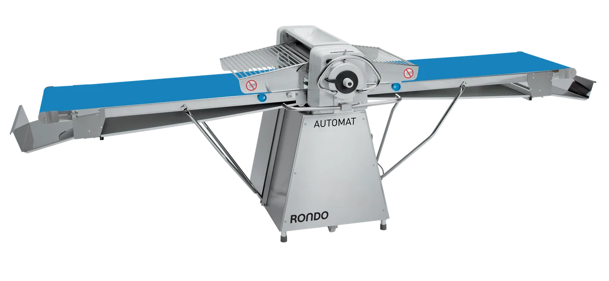
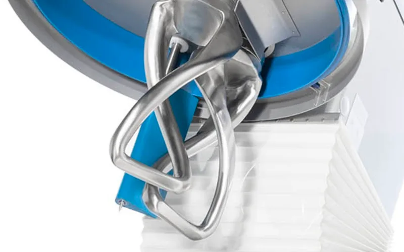
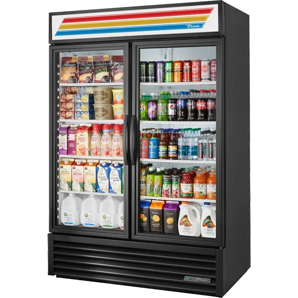
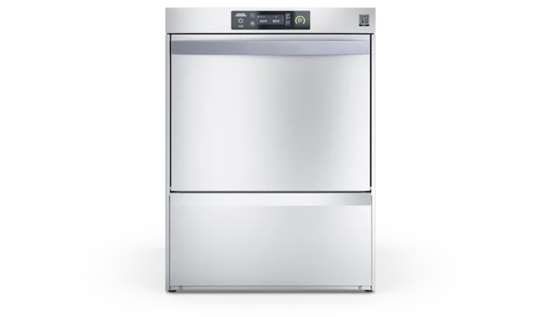
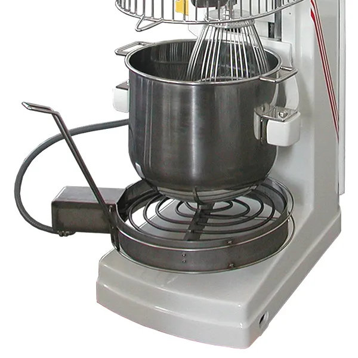
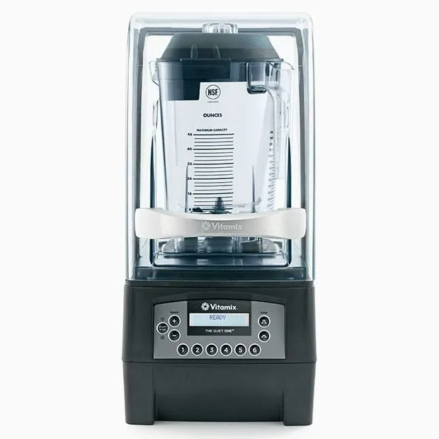

EQUIPAMIENTO PROFESIONAL · LIMA, PERÚ
Representamos en el Perú a los fabricantes más exigentes del mundo en panificación, refrigeración y lavado profesional. Proyectos llave en mano, servicio técnico propio.
Ver marcasNuestros proyectos
Precisión suiza para hojaldres y croissants perfectos.

Ingeniería alemana para el desarrollo ideal del gluten.

Frío comercial americano, líder mundial en confiabilidad.

Resultados impecables con el menor consumo de agua.

Tradición italiana en batidoras y divisoras volumétricas.

El estándar de las cadenas de café más grandes del mundo.
Cuéntanos qué produces y a qué volumen. Diseñamos la solución, la instalamos y la mantenemos funcionando.